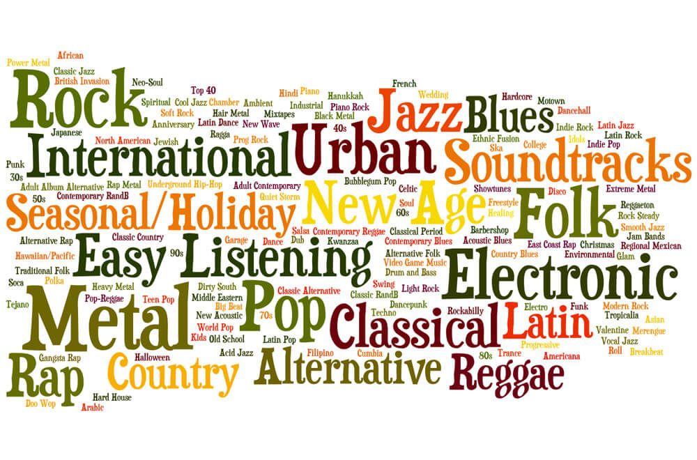

Мои предпочтения в музыке были, по большей части, сформированы моими родителями. Разнообразие их вкусов проявлялось в том, что за один день в доме могли играть песни зарубежных групп и исполнителей каждого десятилетия второй половины прошлого века и российских панк- и рок-групп, а также авторская песня. Думаю, именно это привело к тому, что сегодня в моем плейлисте есть музыка самых разнообразных жанров.
